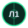
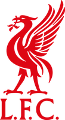

Почему: дом 7 из 9, запасной вратарь гостей, H2H.
07:42 · №1234 · пример
Форма, линия и вероятность модели на одном экране. Решаешь ты.


 СКА — ЦСКА
СКА — ЦСКА  прогноз готов
прогноз готов




 Арсенал — Ливерпуль
Арсенал — Ливерпуль 
прогноз в 16:00Матчи и время — пример
КХЛСегодня, 19:30 МСК · Санкт-ПетербургВыборка небольшая. Смотрите на дистанции.
| Дата | Матч | Ставка | Кэф | Опубликовано | Итог | Пост |
|---|---|---|---|---|---|---|
| 30.10 |  СТЛ — БОС СТЛ — БОС | ИТБ 2,5 | 1,75 | 14:12 | ✕ | №1229 |
| 30.10 |  САЛ — АКБ САЛ — АКБ | П1 | 1,82 | 07:51 | ✓ | №1226 |
| 30.10 |  АВА — МЕТ АВА — МЕТ | ТБ 4,5 | 1,90 | 07:49 | ✓ | №1225 |
| 29.10 |  ТОР — МТЛ ТОР — МТЛ | П1 | 1,66 | 14:05 | ↺ | №1221 |
| 29.10 |  ЛОК — ТОР ЛОК — ТОР | П1 | 1,95 | 07:44 | ✕ | №1218 |
строки таблицы — пример
Прогнозы КХЛ в канале
Разобрать матч: форма, вратари, линия
Футбол: прогноз на вечер
НХЛ на ночь
Итоги вчера: все, и минусы
Шкала «модель / рынок» покажет, где ты расходишься с цифрами.
Страница команды: форма, тренды, твои матчи.


Одна карточка: матч, вероятность, три причины.
СКА — ЦСКА61 %Сент-Луис — БостонЧто сработало: Бостон создал моменты, как и ждала модель.
Что не учли: вратарь хозяев отразил 94 % бросков. Промах остаётся в счёте.
Пять минут на матч вместо десяти вкладок
Результаты, броски и Эло каждого клуба за сезон.
Вероятность из кэфа без маржи — это мнение рынка.
Ставка выходит, только когда модель даёт от 60 % при кэфе 1,6–2,3.
10 000 розыгрышей одного матча · пример
20+ листов: Эло, «что заходит у команд», купон, банкролл, досье, травмы.
Оплата появится скоро. Узнать первым — в Telegram.
Пост на каждый матч, ролики и итоги дня. Время публикации видно у каждого.
Прогнозы, разборы и архив бесплатны. Платной будет аналитическая таблица.
В архиве «Счёт»: с временем публикации, кэфом и номером поста.
ROI считаем и покажем здесь. Пока он не посчитан, мы его не пишем.
Показываем состав вратарей с пометкой: подтверждено или вероятно.
КХЛ, НХЛ и пять футбольных лиг плюс Лига чемпионов.
Ставка, на которую модель даёт от 60 % при кэфе 1,6–2,3.
Там проба с 30.10: считаем отдельно, чтобы не смешивать цифры.